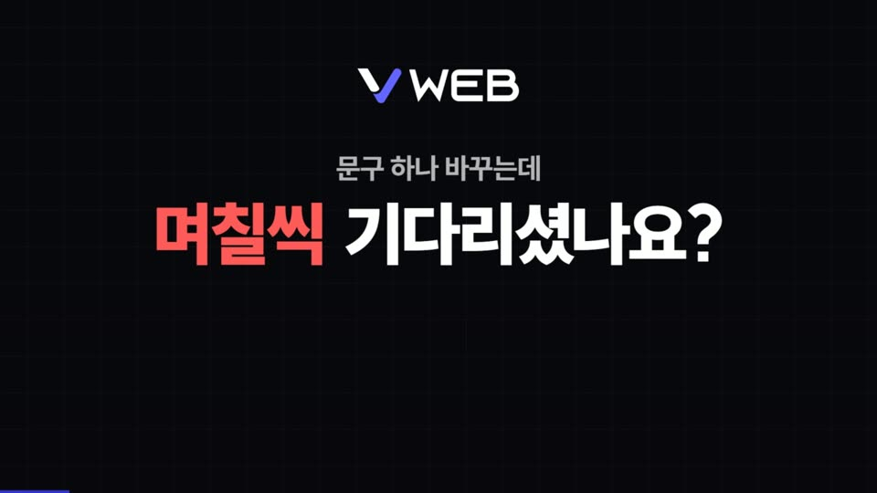
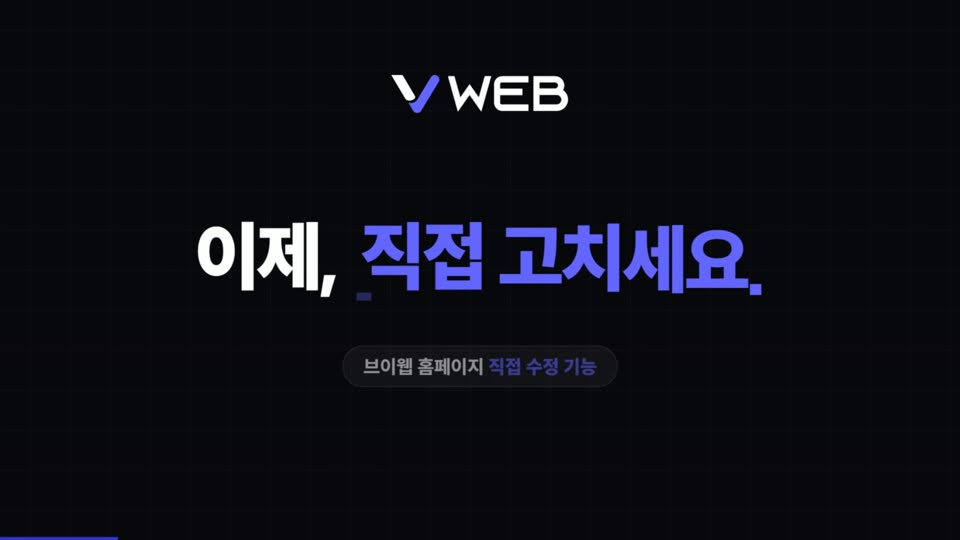
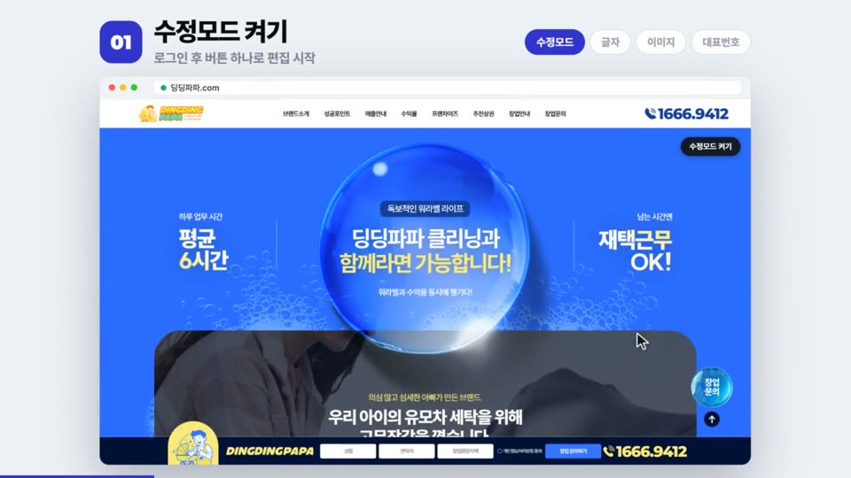
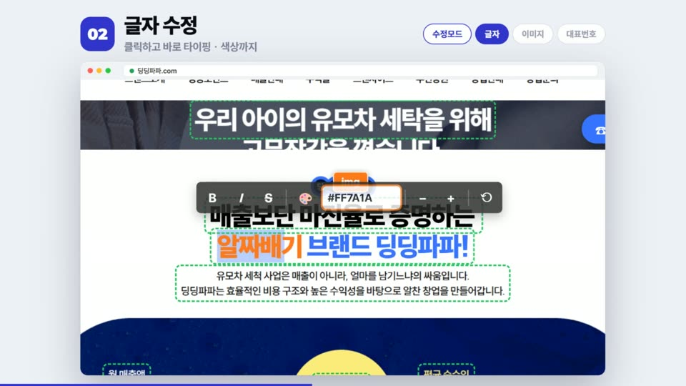
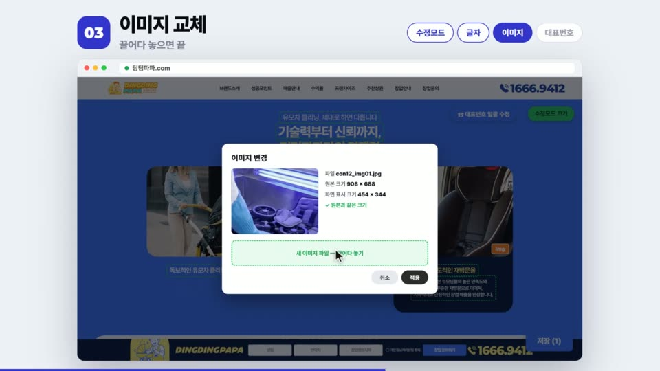
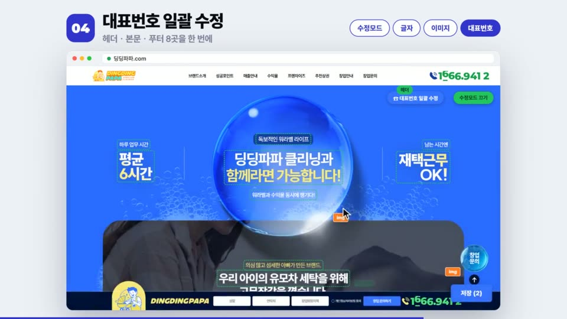
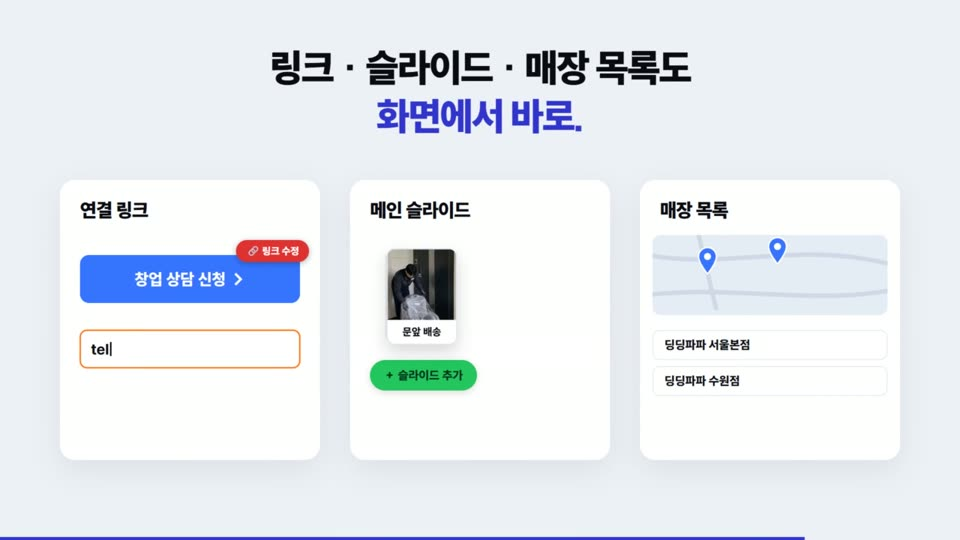
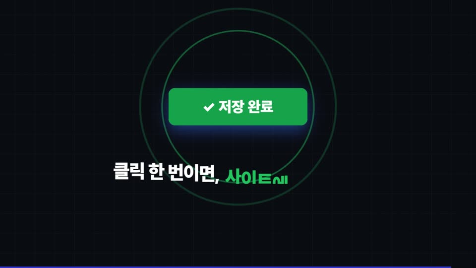
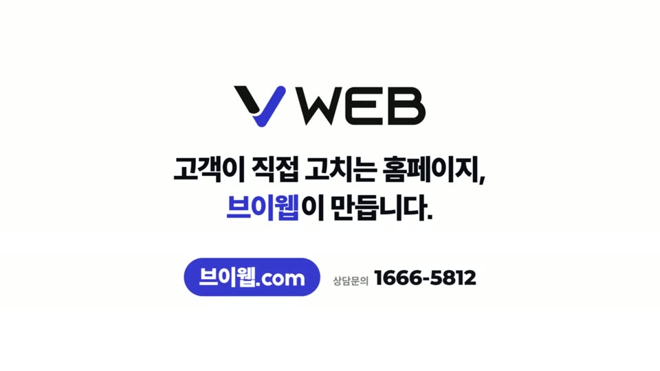

MAIN SECTION PLAN · 2026.10.13
브이웹 메인페이지
신규 섹션 5종 기획서
브이웹.com 메인에 추가할 다섯 섹션의 목적 · 카피 · 화면 구성 · 모션을 정리했습니다.
모션 문법은 수정모드 홍보 영상(30초)을, 디자인 톤은 현재 브이웹.com 메인을 기준으로 맞췄습니다.
00
한눈에 보기
| # | 섹션 | 핵심 메시지 | 대표 모션 | 배경 |
|---|---|---|---|---|
| 01 | V EDIT. 직접 고치는 홈페이지 | 문구 하나 바꾸는데 며칠씩? → 이제, 직접 고치세요. 수정모드 + 관리자 팝업 디자인 | PC 단계 전환 핀(5단계 커서 시연) 모바일 자동 재생 + 탭 | 라벤더 |
| 02 | V SEARCH. AI가 읽는 홈페이지 | 사람에게는 화면을, AI에게는 정확한 데이터를 SEO · AEO · GEO / JSON-LD · 사이트맵 | 화면 ↔ JSON-LD 1:1 매칭 하이라이트 AI 답변 스트리밍 | 화이트 |
| 03 | V FAST & SAFE. 빠르고 단단하게 | 빠르게 열리고, 아무나 들어올 수 없게 속도 · 성능 · 보안 · 봇 차단 | 레이더(봇은 링에서 차단) 보안 로그 · 미니 시각화 4종 | 블랙 |
| 04 | V INSIGHT. 숫자로 보는 방문자 | 누가 오고, 어디서 머물고, 왜 문의했는지 접속자 집계 · 홈페이지 방문분석 | 관리자 대시보드 카운트업 막대 · 퍼널 · 도넛 | 연라벤더 |
| 05 | V ALL IN ONE. 24시간 상담 중 | 상담이 끝난 밤에도, 홈페이지는 상담 중 AI 상담 · 문의 자동 배정 · 아웃트로 | 채팅 → 실시간 접수 → 자동 배정 마퀴 아웃트로 | 화이트 → 인디고 |
4섹션(방문분석)은 "내용이 부족하면 위 섹션에 합치기" 조건이었으나, 관리자 홈페이지 분석 기능(구역별 도달률 · 문의 단계 · 유입 매체 · 기기)만으로 한 섹션이 충분히 채워져 단독 섹션으로 구성했습니다.
01
레퍼런스 영상 분석
KakaoTalk_20261008 · 30초 · 1280×720 · 수정모드 홍보 영상. 메인 섹션에 가져올 모션 문법을 뽑았습니다.









문법 ①
질문 → 해답 카피 리듬
문제를 질문으로 던지고, 짧은 해답 한 줄로 받는다. 01 인트로와 05 아웃트로에 그대로 사용.
문법 ②
단계 칩 + 실제 화면
번호 칩과 단계명을 고정해 두고 오른쪽 화면만 바뀐다. 01 핀 데모의 뼈대.
문법 ③
커서가 직접 조작
설명 대신 커서가 클릭 · 타이핑 · 적용한다. 01 · 05 목업 시연에 적용.
문법 ④
상태 피드백
초록 점선, 주황 img 배지, 저장 (N) 카운트, 초록 완료. 화면 안 UI 색은 영상 그대로.
02
톤앤매너
현재 브이웹.com 메인(V PROJECTS · CLIENT · CONTACT 영역)에서 색과 서체를 실측해 맞췄습니다.
영문 타이틀
V EDIT.
Poppins 800. 라이브 "V PROJECTS."와 같은 문법 — V와 마침표만 인디고.
국문 타이틀 · 본문
이제, 직접 고치세요.
Pretendard Variable 700/800, 본문 400. 강조 단어만 인디고.
단위 · 반응형
PC 1920 / MO 390 기준 vw
라이브 renew 템플릿과 같은 vw 방식. 목업 내부는 em 스케일로 비율 유지. 모바일 분기 599px.
03 — 01
V EDIT. 직접 고치는 홈페이지
- 목적
- 영상의 수정모드 메시지를 메인에서 체험하듯 보여주고, 관리자 팝업 디자인까지 한 흐름으로 묶는다. (요청: 관리자페이지 팝업 디자인 · 직접 수정 가능한 커스텀 홈페이지 필수)
- 카피
문구 하나 바꾸는데 며칠씩 기다리셨나요?
이제, 직접 고치세요.
브이웹 홈페이지는 브랜드에 맞춰 만든 커스텀 홈페이지입니다. 관리자 로그인 한 번이면 보고 있는 화면에서 바로 고치고, 바로 반영됩니다.- 구성
- 인트로 — 질문 → 해답 (영상 00:02~00:03)
- 단계 목록 5 + 브라우저 목업 — 01 수정모드 켜기 · 02 글자 수정 · 03 이미지 교체 · 04 대표번호 일괄 수정 · 05 팝업 디자인
- 카드 4 — 연결 링크 · 메인 슬라이드 · 매장 목록 (화면에서 바로) / 디자인 관리 (관리자: 팝업레이어 · 배너 · 로고 · 메뉴 · 레이아웃 · 워터마크)
- 저장 → 저장 완료 — "클릭 한 번이면, 사이트에 바로 반영."
- 모션
- PC 단계 전환 핀 1개 (단계당 0.8뷰포트) — 핀 진행도로 단계를 바꾸고, 단계마다 커서가 클릭 · 타이핑 · 모달 적용을 시연. 왼쪽 진행선이 채워지고, 단계를 누르면 해당 위치로 스크롤.
모바일 핀 없음 — 목업이 화면에 들어오면 자동 재생(단계 끝 + 1.6초 후 다음), 탭 터치로 이동, 화면 밖이면 일시정지. - 근거 기능
- 표현 주의
- 수정모드는 프로젝트마다 적용하는 패키지라 "브이웹 홈페이지에 적용"으로 표현. 수정 이력/버전 되돌리기는 없으므로 카피에서 사용하지 않음.
03 — 02
V SEARCH. AI가 읽는 홈페이지
- 목적
- SEO → AEO → GEO 흐름을 "사람이 보는 화면 vs AI가 읽는 화면" 비교로 한 번에 이해시킨다. (요청: AEO · GEO · SEO, JSON-LD, 사이트맵, AI가 읽을 수 있는 홈페이지)
- 카피
검색창 대신 AI에게 묻는 시대, 우리 홈페이지는 AI가 읽을 수 있나요?
정리된 데이터는 AI 답변에 그대로 인용됩니다.
- 구성
- 비교 — 매장 카드(사람) ↔ JSON-LD @graph 코드(AI), 가운데 "화면과 1:1 일치" 체크 5개
- AI 답변 예시 — 질문 → 생각 중 → 답변 스트리밍 → 출처 칩
- SEO · AEO · GEO 카드 3 + 키워드 칩 (sitemap.xml · robots.txt · JSON-LD · FAQPage · 매장 ItemList · Open Graph · RSS · 서치어드바이저 · 서치콘솔 · alt 설계)
- 모션
- 코드 줄이 흐린 상태에서 위부터 또렷해짐 → 매장명 · 주소 · 전화 · 영업시간 · FAQ 순으로 양쪽 동시 하이라이트 + 체크. 답변은 단어 단위로 흘러나옴. PC 카드는 자기장(근접) 호버.
- 근거 기능
- 표현 주의
- JSON-LD · 동적 사이트맵은 플레이북으로 제작 시 적용하는 항목 → "제작 단계에서 설계합니다"로 표현. llms.txt · IndexNow · hreflang은 현재 제공 범위가 아니어서 넣지 않음.
03 — 03
V FAST & SAFE. 빠르고 단단하게
- 목적
- 보이지 않는 품질(속도 · 성능 · 보안 · 봇 차단)을 눈에 보이는 그림으로. (요청: 속도 · 성능 · 검색최적화 · 보안 · 봇차단)
- 카피
빠르게 열리고, 아무나 들어올 수 없게.
가볍게, 필요한 것부터.
- 구성
- 속도 카드 4 — 이미지 · 영상 압축 / 보이는 것부터 로딩 / 폰트 최적화 / 라이브러리 자체 호스팅
- 레이더 + 문의폼 보안 로그(예시)
- 방어 카드 8 — 허니팟 · 1회용 보안 토큰 · 출처 확인 · 스팸 문구 필터 · 전송 횟수 제한 · 자동입력방지 강화 · IP 즉시 차단 · 업로드 보호
- "봇 방문은 통계에서도 빠집니다" → 04로 연결
- 모션
- 카드마다 미니 시각화(막대 축소 · 타일 지연 등장 · 폰트 swap · 패킷 이동). 레이더는 봇(레드)이 링에서 멈추고 방문자(화이트)만 중심 도달 — 화면 밖이면 정지. 로그 줄은 흐린 상태에서 차례로 또렷해지고, LIVE 점멸은 1개만.
- 근거 기능
- 표현 주의
- 속도는 점수(PageSpeed 등) 약속 없이 정성 표현. 보안 세부 수치(간격 · 횟수 · 필드명)는 공개 페이지에 적지 않음 — 우회 힌트가 될 수 있음. 로그는 "예시"로 표기.
03 — 04
V INSIGHT. 숫자로 보는 방문자
- 목적
- 외부 도구 없이 관리자에서 바로 보는 방문분석. (요청: 접속자 집계 · 홈페이지 방문분석)
- 카피
누가 오고, 어디서 머물고, 왜 문의했는지 보입니다.
- 구성
- 관리자 "홈페이지 분석" 화면 톤 대시보드 (예시 데이터 표기)
- 특징 4 — 구역별 도달 · 문의 단계 · 광고 유입 자동 구분 · 깨끗한 숫자
- 신뢰 칩 4 — 자체 DB · 봇/관리자 제외 · 입력 내용/원본 IP 미저장 · 기기 구분
- 모션
- KPI 카운트업(자릿수에 맞춰 스냅, 12,480 · 1분 42초 · 38% · 64%) → 구역별 도달률 · 문의 단계 · 유입 매체 막대 → 기기 도넛. 모바일은 카드마다 개별 트리거.
- 근거 기능
- 표현 주의
- "실시간"이라 하지 않음(짧은 주기로 반영). "IP 미저장"은 홈페이지 분석 데이터 기준이라 칩 문구를 "분석 데이터에"로 한정.
03 — 05
V ALL IN ONE. 24시간 상담 중
- 목적
- 자유 섹션 — 새로 들어간 AI 상담 챗봇과 문의 자동 배정을 보여주고, 영상 아웃트로로 메인 신규 구간을 마무리.
- 카피
상담이 끝난 밤에도, 홈페이지는 상담 중입니다.
고객이 직접 고치는 홈페이지, 브이웹이 만듭니다.
브이웹.com · 상담문의 1666-5812- 구성
- 폰 채팅 — 빠른 질문 → 답변 → 지역 → 연락처 → 알림 전송
- 실시간 접수 → 관리자 창업문의 내역 (새 행 + 담당자 자동 배정 + 메일 알림)
- 기능 박스 2 — AI 상담 / 문의 관리
- 인디고 아웃트로 — 마퀴(EDIT · AI SEARCH · SPEED · SECURITY · ANALYTICS · AI CHAT) + 01~05 바로가기
- 모션
- 빠른 질문 탭 → 타이핑 점 → 답변 순서로 대화가 이어지고, 접수 점이 관리자 화면으로 이동 → 기존 행을 밀어내며 새 행 등장 → B 담당 배정 → 토스트. 마퀴는 CSS 무한 흐름.
- 근거 기능
04
모션 원칙 (공통)
보유 애니메이션 스킬(gsap.md · gsap 핀.md · 자기장 효과.md)의 규칙을 그대로 따랐습니다. 톤은 "휙휙"이 아니라 "스윽스윽".
이즈 · 강도
power4.out · 1초 · yPercent ≤ 30
도장(scale 3)과 슬램은 사용하지 않음. 이미지 · 목업은 아래에서 위로.
리듬
무대 → 디테일 → 장식
position은 '< N%'로 통일. 밑줄 같은 장식은 맨 마지막. 섹션당 줄 스플릿 1개(헤드라인).
PC · 모바일
좌우 동시 / 위→아래 개별
PC에서 한 화면에 보이는 좌우는 동시 등장. 모바일은 세로로 나뉘는 블록마다 자기 트리거.
되감김 방지
paused + onEnter play
트리거가 트윈을 소유하지 않아 refresh 때 빈 화면으로 돌아가지 않음.
핀
PC 1개(01) · 모바일 0개
파일 최하단에서 생성 후 refresh, anticipatePin 0.5, scroll-behavior 보정. 단계 클릭은 스크롤만 이동.
반복 · 접근성
화면 밖 정지 · 점멸 1개
레이더 · 채팅 자동재생은 화면 밖에서 멈춤. prefers-reduced-motion이면 최종 상태로 표시.
05
검증 결과
헤드리스 Chrome으로 PC 1920×1080(720px/s) · 모바일 390×844(480px/s) 자연 스크롤을 흘리며 요소 96개를 프레임 단위로 계측했습니다. (gsap.md §2-3 기준)
0
시작조차 못 한 요소
PC · 모바일
0
1초 넘게 빈칸인 요소
PC · 모바일
0
화면 밖에서 끝난 요소
PC · 모바일
1px
핀 시작 위치 오차
모바일 핀 0개 · 가로 넘침 0 · 콘솔 에러 0
06
실제 메인 적용 메모
- 클래스는
vs01 ~ vs05접두어 — 기존 메인con2 ~ con9와 겹치지 않음. - 현재 메인은 GSAP 3.11.4 + ScrollTrigger 3.6.0으로 버전이 서로 다름 → 3.13.0으로 통일하고 ScrollToPlugin을 추가하는 것을 권장.
- 스크립트는 jQuery 1.12에서도 동작하는 문법만 사용 (자기장 효과 함수).
- 시안 상단바 · 커버 · 하단 안내(
.dh·.cv·.df)는 데모용이라 이식 대상이 아님. - 이미지 파일 없이 CSS · SVG로만 구성 — 실제 적용 시 디자인 시안 이미지로 교체 가능.
- 화면 속 브랜드(모노브루) · 번호 · 수치는 모두 설명용 예시.